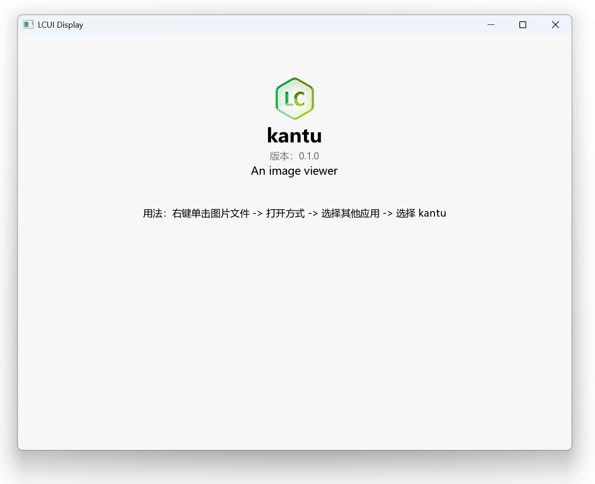

实现主界面
本章节将引导你从组件拆分和布局设计入手，逐步完成界面的编码和样式设置，最终实现一个主界面。完成本章后你将学会：
- TypeScript 的基础语法
- JSX 表达式的写法
- 为界面添加样式
- 将组件展示在窗口内
- 更改窗口标题
拆分组件
主界面展示了程序的各项信息，以文本为主，因此可按信息类型来划分组件，也就是每项信息为一个组件。
对于程序图标的展示，因为 LCUI 暂无功能类似于 <img> 的组件，所以我们使用 CSS 的 background-image 属性将图标作为组件的背景图来显示。
设计布局
内容水平居中，从上到下排列展示每一项信息。
为方便调整内容外间距，我们将内容都放到一个容器组件内，通过设置其 margin-left 和 margin-right 属性为 auto 来实现水平居中。然后设置 margin-top 属性避免内容贴合上边界。为了让内容在窗口宽度过小时贴合左右边界，我们还应设置容器组件的 padding-left 和 padding-right 属性。
描述界面结构
结合上述的组件拆分和布局设计，我们可以得出以下结构：
主界面
容器
头部容器
图标
名称
版本
描述
用法介绍
让我们将它转换成 TypeScript 代码。首先使用 import 语句从 LCUI 的 React 库 @lcui/react 中引入基础组件：
import { Text, Widget } from "@lcui/react";
引入项目根目录中的 package.json 文件以获取基本信息：
import pkg from "../package.json";
接着定义组件函数，命名为 Home，作为默认导出：
export default function Home() {
}
再在函数内添加 JSX 表达式：
export default function Home() {
return (
<Widget>
<Widget>
<Widget>
<Widget />
<Text>{pkg.name}</Text>
<Text>v{pkg.version}</Text>
<Text>{pkg.description}</Text>
</Widget>
<Text>
用法：右键单击图片文件 -> 打开方式 -> 选择其他应用 -> 选择 {pkg.name}
</Text>
</Widget>
</Widget>
);
}
Widget 是基础组件，用途类似于 HTML 中的 <div>，可作为布局容器使用；然而，它并不具备文本显示功能，若要实现文本展示，我们还得依靠 Text 组件。
添加样式
现在的界面还没有样式，你可以在 CSS 文件中编写全局样式，然后在 tsx 文件中给组件设置 className 属性，就像这样：
import { Text, Widget } from "@lcui/react";
import pkg from "../package.json";
import "./home.scss";
export default function Home() {
return (
<Widget className="home">
<Widget className="container">
<Widget className="header">
<Widget className="logo" />
<Text className="name">{pkg.name}</Text>
<Text className="version">版本：{pkg.version}</Text>
<Text className="description">{pkg.description}</Text>
</Widget>
<Text className="usage">
用法：右键单击图片文件 -> 打开方式 -> 选择其他应用 -> 选择{" "}
{pkg.name}
</Text>
</Widget>
</Widget>
);
}
结合上文所提供的布局方法，以及你已有的 CSS 基础，相信你可以轻松编写出相应的 CSS 规则。
以下是参考 CSS。注意，你需要将 logo.png 图标文件添加到 src/assets 目录内。
.home {
background: rgb(247, 247, 247);
height: 100%;
.container {
padding: 60px 20px 20px 20px;
max-width: 800px;
margin: 0 auto;
}
.header {
display: flex;
flex-direction: column;
align-items: center;
width: 100%;
margin-bottom: 40px;
}
.name {
font-size: 28px;
font-weight: bold;
display: inline-block;
}
.version {
color: #717171;
}
.description {
font-size: 16px;
}
.logo {
width: 64px;
height: 64px;
background-size: contain;
background-position: center;
background-image: url("./assets/logo.png");
}
.usage {
text-align: center;
}
}
编译 TypeScript
运行以下命令编译 src 目录内的 tsx 文件：
lcui build
运行后，src 目录内会产生新的文件：
main.c：包含main()函数实现。该文件仅在初次编译时创建。main.h：包含 LCUI 应用程序初始化实现代码。该文件在每次构建后更新。home.c: Home 组件源文件。该文件仅在初次编译时创建。home.h: Home 组件头文件。该文件仅在初次编译时创建。home.tsx.h：tsx 编译后的组件 C 源码，供 .c 源文件包含。
显示界面
直接运行此程序你会发现窗口内什么都没有，这是因为与窗口绑定的根组件是空的。
编辑 main.c，将 home 组件追加到根组件内：
#include "main.h"
int main(int argc, char *argv[])
{
app_init();
ui_widget_append(ui_root(), ui_create_home());
return app_run();
}

设置窗口标题
应用程序窗口标题默认是 LCUI Display，我们可以调用 ui_widget_set_title() 函数来更改为程序名称：
#include "main.h"
int main(int argc, char *argv[])
{
app_init();
ui_widget_set_title(ui_root(), L"Kantu");
ui_widget_append(ui_root(), ui_create_home());
return app_run();
}
因为 LCUI 默认的显示模式是单窗口，该窗口与根级组件绑定，根组件的宽高、标题属性的变动都会同步到窗口。所以我们利用这一特性，通过修改根组件的 title 属性来设置窗口标题。
小结
我们完成了主界面的构建。首先进行组件拆分，按信息类型划分。接着设计布局，实现内容水平居中、上下排列。然后用 TypeScript 描述界面结构，添加样式。编译 TypeScript 后，将主界面组件添加到根组件显示，并通过修改根组件的标题属性设置窗口标题。
想要进一步地练习？你可以试试以下任务：
- 美化主界面。
- 添加主页、反馈问题的链接。
- 添加展示构建时间、LCUI 版本号、构建工具信息。